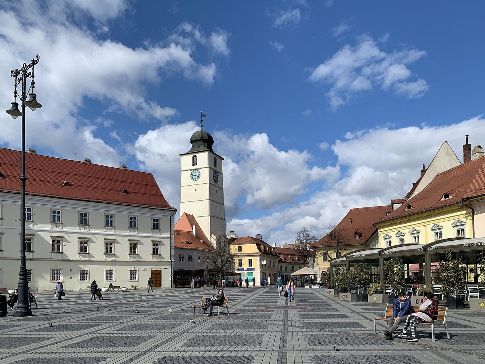

루마니아 시비우시, 4.8312MW 시 소유 태양광 단지 계약…가로등 등 공공시설 전기요금 상계

델룰 더이 부지에 EU 현대화 기금 2,805만 레이, 연 최소 6,468.574MWh…2027년 초 착공 뒤 5개월 안에 가동, 남는 전기 담을 배터리 2,547만 레이는 따로 신청
루마니아 중부 시비우시가 델룰 더이(Dealul Dăii) 부지에 시 소유 태양광 단지를 짓는 설계·시공 계약을 맺었다. 공공조달을 거친 계약 금액은 2,805만 레이로, 시비우 업체 Energotehnica와 Energototal 컨소시엄이 공사를 맡고 사업비는 유럽연합(EU) 현대화 기금을 에너지부를 거쳐 받는다. 설비 용량은 4.8312MW, 연간 생산량은 최소 6,468.574MWh로 잡혔으며, 단지는 만든 전기를 배전망에 보내고 그만큼 가로등 등 시 공공시설이 쓴 전기요금을 덜어 내는 프로슈머 방식으로 운영된다. 시공사는 계약 뒤 2개월 안에 기술설계와 허가 서류를 갖춰야 하고, 착공 명령은 2027년 초로 예정돼 있으며 그 뒤 5개월 안에 설치와 가동을 마쳐야 한다. 아스트리드 포도르 시장은 가로등이 공공 부문의 큰 전기 소비처라며 이 단지가 그 사용량 대부분을 맡아 시의 에너지 자립을 높이고 공공 전기 지출을 줄일 것이라고 했고, 시는 남는 전기를 저장할 배터리 사업(2,547만 레이)을 따로 EU 무상 자금에 신청했다. 루마니아 동부 갈라치시도 옛 쓰레기 매립지 위에 EU 자금 2,500만 레이를 들여 최소 4MW 규모의 태양광 단지를 짓고 있으며 2027년 여름 완공할 계획이다.
시민에너지 관점
시 건물 지붕에서 그치지 않고 4.8312MW 단지를 세워 가로등 전기를 스스로 대겠다는 것은, 공공요금을 아끼는 가장 확실한 길이 공공이 발전소의 주인이 되는 것임을 보여 준다. EU 돈으로 지은 시설이 결국 시청의 비용 절감으로만 끝난다는 지적이 나올 수 있지만, 독일 헤센주 볼프하겐에서는 시민 에너지협동조합이 시 에너지공사 지분 25%를 가져 공공 소유와 주민 소유를 한 회사 안에 묶었다. 공공이 부지와 신용을 대고 주민이 지분으로 함께하면 공공요금 절감과 주민 배당이 모두 지역에 남는다. 국내 지자체도 유휴 공공부지를 외부 발전사업자 임대로 넘기기 전에, 공공시설 전기를 스스로 대고 주민이 지분을 나눠 갖는 모델부터 검토해야 한다.
출처: Ora de Sibiu 2026-10-27 Buzdugan Dan 원문 보기
ルーマニア・シビウ市、4.8312MWの市有太陽光発電所を契約…街灯など公共施設の電気料金を相殺
デアルル・ダイイの用地にEU近代化基金2,805万レイ、年間最低6,468.574MWh…2027年初めに着工し5カ月以内に稼働、余剰電力をためる蓄電池2,547万レイは別途申請
ルーマニア中部のシビウ市が、デアルル・ダイイ（Dealul Dăii）の用地に市有の太陽光発電所を建設する設計・施工契約を結んだ。公共調達を経た契約額は2,805万レイで、シビウの企業EnergotehnicaとEnergototalの共同企業体が工事を担い、事業費は欧州連合（EU）の近代化基金をエネルギー省経由で受ける。設備容量は4.8312MW、年間発電量は最低6,468.574MWhと見込まれ、発電所はつくった電気を配電網に送り、その分だけ街灯など市の公共施設が使った電気料金を差し引くプロシューマー方式で運営される。施工会社は契約から2カ月以内に技術設計と許可書類を整える必要があり、着工命令は2027年初めに予定され、その後5カ月以内に設置と稼働を終えなければならない。アストリッド・フォドル市長は、街灯は公共部門の大きな電力消費先だとして、この発電所がその使用量の大半を担い、市のエネルギー自立を高めて公共の電気支出を減らすと述べ、市は余剰電力を蓄える蓄電池事業（2,547万レイ）を別途EUの無償資金に申請した。ルーマニア東部のガラツィ市も、かつてのごみ埋め立て地の上にEU資金2,500万レイを投じて最低4MW規模の太陽光発電所を建設中で、2027年夏の完成を予定している。
市民エネルギーの視点
市の建物の屋根にとどまらず4.8312MWの発電所を建てて街灯の電気を自ら賄うという計画は、公共料金を節約する最も確かな道は公共が発電所の持ち主になることだと示している。EUの資金で建てた施設が結局は市役所の経費削減で終わるだけだとの指摘も出うるが、ドイツ・ヘッセン州のヴォルフハーゲンでは市民エネルギー協同組合が市のエネルギー公社の株式25%を持ち、公共所有と住民所有を一つの会社の中で結びつけた。公共が用地と信用を提供し住民が出資で加われば、公共料金の節約と住民への配当がともに地域に残る。韓国の自治体も、遊休公共用地を外部の発電事業者への賃貸に回す前に、公共施設の電気を自ら賄い住民が持ち分を分け合うモデルから検討すべきだ。
出典: Ora de Sibiu 2026-10-27 Buzdugan Dan 原文を読む
罗马尼亚锡比乌市签约4.8312MW市有光伏电站…抵扣路灯等公共设施电费
达伊山（Dealul Dăii）用地获欧盟现代化基金2,805万列伊，年发电量至少6,468.574MWh…2027年初开工后5个月内投运，储存余电的电池项目2,547万列伊另行申请
罗马尼亚中部锡比乌市签订了在达伊山（Dealul Dăii）用地建设市有光伏电站的设计施工合同。经公共采购确定的合同金额为2,805万列伊，由锡比乌本地企业Energotehnica与Energototal组成的联合体承建，资金来自欧盟现代化基金，经能源部拨付。电站装机容量4.8312MW，年发电量预计至少6,468.574MWh，采用产消者（prosumer）模式运行：所发电力送入配电网，相应抵扣路灯等市属公共设施的用电费用。承包商须在签约后2个月内完成技术设计和许可文件，开工令预计于2027年初下达，此后须在5个月内完成安装并投运。市长阿斯特丽德·福多尔表示，路灯是公共部门的用电大户，这座电站将承担其中大部分用电，提高城市的能源自主并减少公共电费支出；市政府还另行为储存余电的电池项目（2,547万列伊）申请了欧盟无偿资金。罗马尼亚东部的加拉茨市也正在一处旧垃圾填埋场上用2,500万列伊欧盟资金建设至少4MW的光伏电站，计划2027年夏季完工。
市民能源视角
不止于市政建筑屋顶，而是建起4.8312MW电站自供路灯用电，说明节省公共开支最可靠的办法是让公共部门成为电站的主人。有人可能会说，用欧盟资金建成的设施最终只是帮市政府省钱；但在德国黑森州的沃尔夫哈根，市民能源合作社持有市属能源公司25%的股份，把公共所有和居民所有结合在同一家公司里。由公共部门提供用地和信用、居民以入股方式参与，公共费用的节省和居民的分红就都能留在本地。韩国的地方政府在把闲置公共用地租给外部发电企业之前，也应先研究由公共设施自供电力、居民分享股份的模式。
来源: Ora de Sibiu 2026-10-27 Buzdugan Dan 查看原文
Romania's Sibiu signs contract for 4.8312MW city-owned solar park to offset power bills for street lighting and other public facilities
EU Modernisation Fund money of 28.05 million lei for the Dealul Dăii site and at least 6,468.574MWh a year; work to start in early 2027 and finish within five months, with a separate 25.47 million lei bid for batteries to store surplus power
The city of Sibiu in central Romania has signed a design-and-build contract for a city-owned solar park on the Dealul Dăii site. The contract, awarded through public procurement, is worth 28.05 million lei and will be carried out by a consortium of Sibiu firms Energotehnica and Energototal, with funding from the European Union's Modernisation Fund channelled through the Ministry of Energy. The park will have an installed capacity of 4.8312MW and produce at least 6,468.574MWh a year, running as a prosumer: it feeds its output into the distribution grid and the city's electricity bills for public facilities such as street lighting are offset accordingly. The contractor has two months from signing to complete the technical design and permit documents, the order to start work is expected in early 2027, and installation and commissioning must be finished within five months after that. Mayor Astrid Fodor said street lighting is one of the big public consumers of power and that the park will cover most of that use, raising the city's energy independence and cutting public spending on electricity, and the city has separately applied for EU grant funding for a 25.47 million lei battery project to store surplus power. In eastern Romania, the city of Galați is also building a solar park of at least 4MW on a former landfill with 25 million lei in EU funds, due for completion in summer 2027.
Citizen Energy View
Going beyond the roofs of city buildings to build a 4.8312MW park that supplies its own street lighting shows that the surest way to cut public bills is for the public sector to own the plant. Some may say a facility built with EU money ends up only trimming city hall's costs, but in Wolfhagen, in Germany's Hesse state, a citizens' energy cooperative holds 25% of the municipal utility, combining public and resident ownership in one company. When the public side provides land and credit and residents join as shareholders, both the savings on public bills and the dividends to residents stay in the area. Korean local governments, too, should look first at models in which public facilities supply their own power and residents share ownership, before leasing idle public land to outside power developers.
Source: Ora de Sibiu 2026-10-27 Buzdugan Dan Read the original